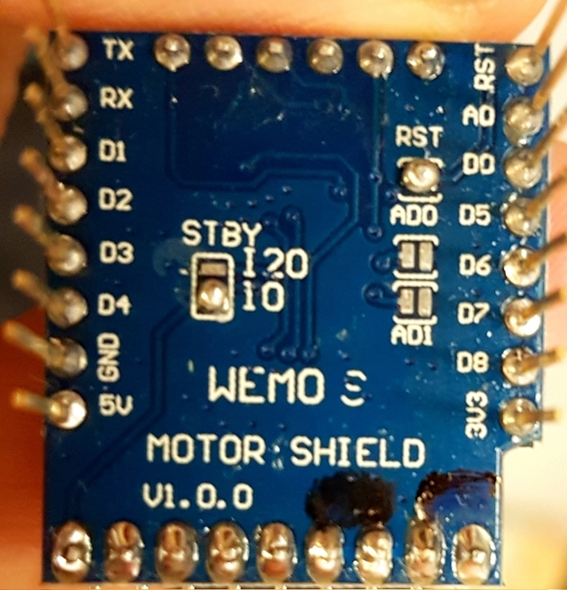

Lokdekoder (D1-Mini und Shield)
Für die Lösung wird ein D1-Mini und ein D1-Motor-Shield (Version 1) genutzt.
Das Shield kommuniziert über I2C, kann zwei Motoren bis 1,2 A (Peak 3,2 A) ansteuern und ist somit für kleinere Loks geeignet.
D1-Motor-Shield
Leider enthält die Shield-Firmware im Originalzustand einen Bug. Wenn 10 Sekunden lang keine I²C Befehl kommt, friert das Board ein.
Aus diesem Grund muss die Firmware aktualisiert werden. Auf Hackaday
ist eine Anleitung zum Update zu finden. Eine fertig kompilierte und getestete Firmware kann im
open4me-Forum gefunden werden.
Die I2C Adresse sowie einige andere Features können mit Lötpads auf der Unterseite eingestellt werden. Da bei den verschiedenen Auslieferungen die Lötpad-Konfigurationen verschieden sind, ist es notwendig, dass das Board kontrolliert und wenn nötig, folgendermaßen konfiguriert ist:
- Die Lötpads RST muss verbunden werden
- Von den drei Lötpads STBY müssen die beiden für I2C verbunden werden
- RST padden und STBY auf I2C (um)padden.
- Für die Standard-Adresse 48, müssen AD0 und AD1 offen sein
- Den Pin “S” auf High (3,3V) ziehen
| AD1 | AD0 | Adresse (HEX) | Adresse (DEC) |
|---|---|---|---|
| offen | offen | 0x30 | 48 |
| offen | geschlossen | 0x2F | 47 |
| geschlossen | offen | 0x2E | 46 |
| geschlossen | geschlossen | 0x2D | 45 |

Konfiguration
Der Configfile-Generator unterstützt das D1-Mni-Shield noch nicht.
{
"version":"3",
"cfg":[
{
"m":"ap",
"ssid":"SSID",
"kanal":"6",
"pwd":"XXXXXXXX"
},
{
"m":"webservicewifiscanner"
},
{
"m":"webservicelog"
},
{
"m":"cmdlogger"
},
{
"m":"i2c",
"sda":"D2",
"scl":"D1"
}
],
"out":
[
{
"id":"pwm1",
"m":"pwm",
"type":"shieldv1",
"i2caddr", "48",
"motoridx", "0"
}
],
"in":
[
{
"m":"locospeed",
"addr":4711,
"out":[
"pwm1"
]
}
],
"connector":[
]
}